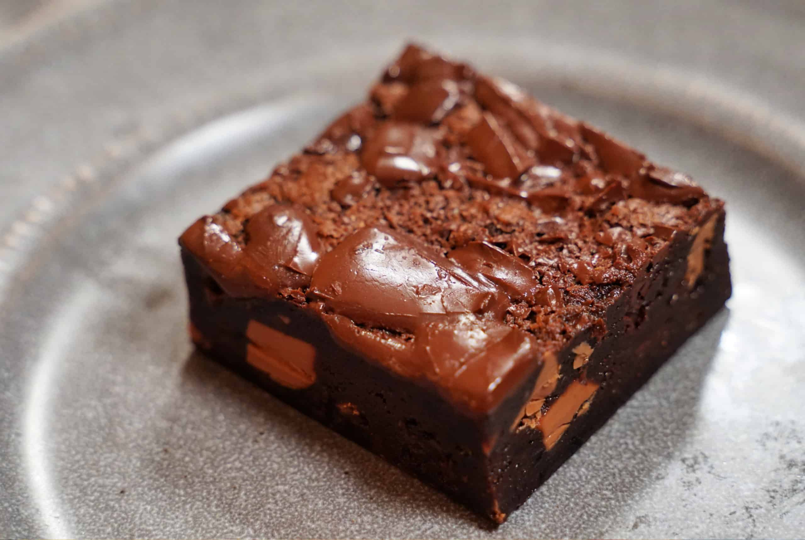

Decadent 100-Hour Brownies

Description
Indulge in the ultimate chocolate experience with these 100-hour brownies, a labor of love that takes time but yields unparalleled richness and depth of flavor.
With a fudgy texture and intense chocolate taste, these brownies are worth every moment of anticipation.
Ingredients
- Unsalted Butter, 1 cup
- Bittersweet Chocolate, 8 ounces
- Granulated Sugar, 1 1/4 cups
- Eggs, 4 large
- All-Purpose Flour, 1 cup
- Cocoa Powder, 1/4 cup
- Salt, 1/2 teaspoon
- Vanilla Extract, 1 teaspoon
- Chopped Nuts or Chocolate Chips (optional), 1 cup
Steps
- Preheat your oven to 350°F (175°C) and grease a 9x13-inch baking pan.
- In a saucepan, melt the butter and bittersweet chocolate over low heat, stirring until smooth. Let it cool slightly.
- In a mixing bowl, beat the sugar and eggs until light and fluffy.
- Gradually add the melted chocolate mixture to the egg mixture, stirring until well combined.
- Sift in the flour, cocoa powder, and salt, and fold gently until just combined.
- Stir in the vanilla extract and chopped nuts or chocolate chips, if using.
- Pour the batter into the prepared baking pan and spread it evenly.
- Bake for 25-30 minutes, or until a toothpick inserted into the center comes out with a few moist crumbs.
- Remove from the oven and let the brownies cool completely in the pan before slicing and serving. Enjoy your heavenly 100-hour brownies!